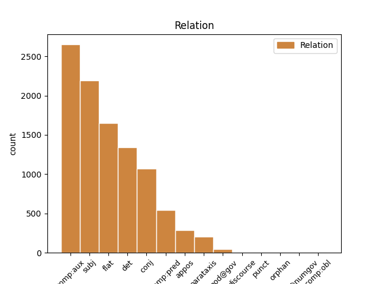
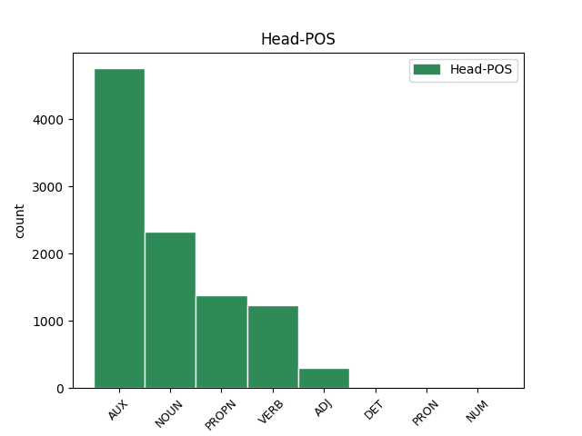
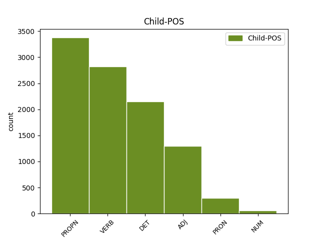

Distribution of features within this leaf



Agreement Rules sorted by frequency.
- When the dependent token is the complement for auxiliary(comp:aux) of the head token, and the dependent token is VERB.
1 Najprizemniji _ _ _ _ 0 _ _ _
2 primer _ _ _ _ 0 _ _ _
3 ove _ _ _ _ 0 _ _ _
4 opasnosti _ _ _ _ 0 _ _ _
5 je _ _ _ _ 0 _ _ _
6 skandal _ _ _ _ 0 _ _ _
7 iz _ _ _ _ 0 _ _ _
8 2014. _ _ _ _ 0 _ _ _
9 kada _ _ _ _ 0 _ _ _
10 su _ _ _ _ 0 _ _ _
11 ukradeni _ _ _ _ 0 _ _ _
12 i _ _ _ _ 0 _ _ _
13 objavljeni _ _ _ _ 0 _ _ _
14 privatni _ _ _ _ 0 _ _ _
15 obnaženi _ _ _ _ 0 _ _ _
16 selfiji _ _ _ _ 0 _ _ _
17 poznatih _ _ _ _ 0 _ _ _
18 osoba _ _ _ _ 0 _ _ _
19 iz _ _ _ _ 0 _ _ _
20 sveta _ _ _ _ 0 _ _ _
21 filma _ _ _ _ 0 _ _ _
22 i _ _ _ _ 0 _ _ _
23 pop _ _ _ _ 0 _ _ _
24 kulture _ _ _ _ 0 _ _ _
25 , _ _ _ _ 0 _ _ _
26 koji _ _ _ _ 0 _ _ _
27 su _ _ _ _ 0 _ _ _
28 bili _ _ _ _ 0 _ _ _
29 pohranjeni _ _ _ _ 0 _ _ _
30 na _ _ _ _ 0 _ _ _
31 oblaku _ _ _ _ 0 _ _ _
32 podataka _ _ _ _ 0 _ _ _
33 u _ _ _ _ 0 _ _ _
34 koji _ _ _ _ 0 _ _ _
35 su biti AUX Var3p Mood=Ind|Number=Plur|Person=3|Tense=Pres|VerbForm=Fin 0 _ _ _
36 hakeri _ _ _ _ 0 _ _ _
37 upali upasti VERB Vmp-pm Gender=Masc|Number=Plur|Tense=Past|VerbForm=Part|Voice=Act 35 comp:aux _ _
1 Naime _ _ _ _ 0 _ _ _
2 , _ _ _ _ 0 _ _ _
3 2016. _ _ _ _ 0 _ _ _
4 jedan _ _ _ _ 0 _ _ _
5 pametni _ _ _ _ 0 _ _ _
6 automobil _ _ _ _ 0 _ _ _
7 američkog _ _ _ _ 0 _ _ _
8 proizvođača _ _ _ _ 0 _ _ _
9 Tesla Tesla PROPN Npmsn Case=Nom|Gender=Masc|Number=Sing 0 _ _ _
10 Motors Motors PROPN Npmsn Case=Nom|Gender=Masc|Number=Sing 9 flat _ _
11 nije _ _ _ _ 0 _ _ _
12 uspeo _ _ _ _ 0 _ _ _
13 da _ _ _ _ 0 _ _ _
14 uoči _ _ _ _ 0 _ _ _
15 razliku _ _ _ _ 0 _ _ _
16 između _ _ _ _ 0 _ _ _
17 bele _ _ _ _ 0 _ _ _
18 površine _ _ _ _ 0 _ _ _
19 prikolice _ _ _ _ 0 _ _ _
20 i _ _ _ _ 0 _ _ _
21 neba _ _ _ _ 0 _ _ _
22 i _ _ _ _ 0 _ _ _
23 došlo _ _ _ _ 0 _ _ _
24 je _ _ _ _ 0 _ _ _
25 do _ _ _ _ 0 _ _ _
26 sudara _ _ _ _ 0 _ _ _
27 sa _ _ _ _ 0 _ _ _
28 smrtnim _ _ _ _ 0 _ _ _
29 ishodom _ _ _ _ 0 _ _ _
30 . _ _ _ _ 0 _ _ _
1 Međutim _ _ _ _ 0 _ _ _
2 , _ _ _ _ 0 _ _ _
3 kao _ _ _ _ 0 _ _ _
4 što _ _ _ _ 0 _ _ _
5 lagano _ _ _ _ 0 _ _ _
6 , _ _ _ _ 0 _ _ _
7 ali _ _ _ _ 0 _ _ _
8 sigurno _ _ _ _ 0 _ _ _
9 napreduje _ _ _ _ 0 _ _ _
10 širenje _ _ _ _ 0 _ _ _
11 nuklearnih _ _ _ _ 0 _ _ _
12 centrala _ _ _ _ 0 _ _ _
13 po _ _ _ _ 0 _ _ _
14 svetu _ _ _ _ 0 _ _ _
15 usred _ _ _ _ 0 _ _ _
16 ekonomske _ _ _ _ 0 _ _ _
17 isplativosti _ _ _ _ 0 _ _ _
18 dogod _ _ _ _ 0 _ _ _
19 nema _ _ _ _ 0 _ _ _
20 akcidenata _ _ _ _ 0 _ _ _
21 , _ _ _ _ 0 _ _ _
22 tako _ _ _ _ 0 _ _ _
23 će _ _ _ _ 0 _ _ _
24 barem _ _ _ _ 0 _ _ _
25 zasad _ _ _ _ 0 _ _ _
26 i _ _ _ _ 0 _ _ _
27 Internet _ _ _ _ 0 _ _ _
28 stvari _ _ _ _ 0 _ _ _
29 nastaviti _ _ _ _ 0 _ _ _
30 da _ _ _ _ 0 _ _ _
31 postaje _ _ _ _ 0 _ _ _
32 realnost _ _ _ _ 0 _ _ _
33 , _ _ _ _ 0 _ _ _
34 dobrim _ _ _ _ 0 _ _ _
35 delom _ _ _ _ 0 _ _ _
36 i _ _ _ _ 0 _ _ _
37 zato _ _ _ _ 0 _ _ _
38 što _ _ _ _ 0 _ _ _
39 su _ _ _ _ 0 _ _ _
40 mlađe _ _ _ _ 0 _ _ _
41 generacije _ _ _ _ 0 _ _ _
42 već _ _ _ _ 0 _ _ _
43 od _ _ _ _ 0 _ _ _
44 malena _ _ _ _ 0 _ _ _
45 okružene _ _ _ _ 0 _ _ _
46 takvim takav DET Pd-msi Case=Ins|Gender=Masc|Number=Sing|PronType=Dem 48 det _ _
47 tehnološkim _ _ _ _ 0 _ _ _
48 konceptom koncept NOUN Ncmsi Case=Ins|Gender=Masc|Number=Sing 0 _ _ _
49 , _ _ _ _ 0 _ _ _
50 pa _ _ _ _ 0 _ _ _
51 i _ _ _ _ 0 _ _ _
52 delimično _ _ _ _ 0 _ _ _
53 integrisane _ _ _ _ 0 _ _ _
54 u _ _ _ _ 0 _ _ _
55 njega _ _ _ _ 0 _ _ _
56 . _ _ _ _ 0 _ _ _
1 Blek Blek PROPN Npmsn Case=Nom|Gender=Masc|Number=Sing 7 subj _ _
2 Het _ _ _ _ 0 _ _ _
3 , _ _ _ _ 0 _ _ _
4 odnosno _ _ _ _ 0 _ _ _
5 Crni _ _ _ _ 0 _ _ _
6 šešir _ _ _ _ 0 _ _ _
7 je biti AUX Var3s Mood=Ind|Number=Sing|Person=3|Tense=Pres|VerbForm=Fin 0 _ _ _
8 termin _ _ _ _ 0 _ _ _
9 za _ _ _ _ 0 _ _ _
10 hakera _ _ _ _ 0 _ _ _
11 koji _ _ _ _ 0 _ _ _
12 koristi _ _ _ _ 0 _ _ _
13 svoje _ _ _ _ 0 _ _ _
14 umeće _ _ _ _ 0 _ _ _
15 u _ _ _ _ 0 _ _ _
16 ilegalne _ _ _ _ 0 _ _ _
17 svrhe _ _ _ _ 0 _ _ _
18 . _ _ _ _ 0 _ _ _
1 Najprizemniji _ _ _ _ 0 _ _ _
2 primer _ _ _ _ 0 _ _ _
3 ove _ _ _ _ 0 _ _ _
4 opasnosti _ _ _ _ 0 _ _ _
5 je _ _ _ _ 0 _ _ _
6 skandal _ _ _ _ 0 _ _ _
7 iz _ _ _ _ 0 _ _ _
8 2014. _ _ _ _ 0 _ _ _
9 kada _ _ _ _ 0 _ _ _
10 su _ _ _ _ 0 _ _ _
11 ukradeni _ _ _ _ 0 _ _ _
12 i _ _ _ _ 0 _ _ _
13 objavljeni _ _ _ _ 0 _ _ _
14 privatni _ _ _ _ 0 _ _ _
15 obnaženi _ _ _ _ 0 _ _ _
16 selfiji _ _ _ _ 0 _ _ _
17 poznatih _ _ _ _ 0 _ _ _
18 osoba _ _ _ _ 0 _ _ _
19 iz _ _ _ _ 0 _ _ _
20 sveta _ _ _ _ 0 _ _ _
21 filma _ _ _ _ 0 _ _ _
22 i _ _ _ _ 0 _ _ _
23 pop _ _ _ _ 0 _ _ _
24 kulture _ _ _ _ 0 _ _ _
25 , _ _ _ _ 0 _ _ _
26 koji koji DET Pi-mpn Case=Nom|Gender=Masc|Number=Plur|PronType=Int,Rel 27 subj _ _
27 su biti AUX Var3p Mood=Ind|Number=Plur|Person=3|Tense=Pres|VerbForm=Fin 0 _ _ _
28 bili _ _ _ _ 0 _ _ _
29 pohranjeni _ _ _ _ 0 _ _ _
30 na _ _ _ _ 0 _ _ _
31 oblaku _ _ _ _ 0 _ _ _
32 podataka _ _ _ _ 0 _ _ _
33 u _ _ _ _ 0 _ _ _
34 koji _ _ _ _ 0 _ _ _
35 su _ _ _ _ 0 _ _ _
36 hakeri _ _ _ _ 0 _ _ _
37 upali _ _ _ _ 0 _ _ _
1 Ako _ _ _ _ 0 _ _ _
2 je biti AUX Var3s Mood=Ind|Number=Sing|Person=3|Tense=Pres|VerbForm=Fin 0 _ _ _
3 moguće moguć ADJ Agpnsny Case=Nom|Definite=Def|Degree=Pos|Gender=Neut|Number=Sing 2 comp:pred _ _
4 da _ _ _ _ 0 _ _ _
5 neko _ _ _ _ 0 _ _ _
6 uhakuje _ _ _ _ 0 _ _ _
7 vaš _ _ _ _ 0 _ _ _
8 toster _ _ _ _ 0 _ _ _
9 i _ _ _ _ 0 _ _ _
10 preko _ _ _ _ 0 _ _ _
11 njega _ _ _ _ 0 _ _ _
12 dođe _ _ _ _ 0 _ _ _
13 do _ _ _ _ 0 _ _ _
14 intimnih _ _ _ _ 0 _ _ _
15 podataka _ _ _ _ 0 _ _ _
16 o _ _ _ _ 0 _ _ _
17 vama _ _ _ _ 0 _ _ _
18 ili _ _ _ _ 0 _ _ _
19 hakovanjem _ _ _ _ 0 _ _ _
20 autopilota _ _ _ _ 0 _ _ _
21 u _ _ _ _ 0 _ _ _
22 kolima _ _ _ _ 0 _ _ _
23 može _ _ _ _ 0 _ _ _
24 da _ _ _ _ 0 _ _ _
25 se _ _ _ _ 0 _ _ _
26 počini _ _ _ _ 0 _ _ _
27 ubistvo _ _ _ _ 0 _ _ _
28 , _ _ _ _ 0 _ _ _
29 koliku _ _ _ _ 0 _ _ _
30 opasnost _ _ _ _ 0 _ _ _
31 onda _ _ _ _ 0 _ _ _
32 nosi _ _ _ _ 0 _ _ _
33 hakovanje _ _ _ _ 0 _ _ _
34 infrastrukture _ _ _ _ 0 _ _ _
35 ili _ _ _ _ 0 _ _ _
36 bolnica _ _ _ _ 0 _ _ _
37 ili _ _ _ _ 0 _ _ _
38 nuklearnih _ _ _ _ 0 _ _ _
39 silosa _ _ _ _ 0 _ _ _
40 ? _ _ _ _ 0 _ _ _
1 Međutim _ _ _ _ 0 _ _ _
2 , _ _ _ _ 0 _ _ _
3 kao _ _ _ _ 0 _ _ _
4 što _ _ _ _ 0 _ _ _
5 lagano _ _ _ _ 0 _ _ _
6 , _ _ _ _ 0 _ _ _
7 ali _ _ _ _ 0 _ _ _
8 sigurno _ _ _ _ 0 _ _ _
9 napreduje _ _ _ _ 0 _ _ _
10 širenje _ _ _ _ 0 _ _ _
11 nuklearnih _ _ _ _ 0 _ _ _
12 centrala _ _ _ _ 0 _ _ _
13 po _ _ _ _ 0 _ _ _
14 svetu _ _ _ _ 0 _ _ _
15 usred _ _ _ _ 0 _ _ _
16 ekonomske _ _ _ _ 0 _ _ _
17 isplativosti _ _ _ _ 0 _ _ _
18 dogod _ _ _ _ 0 _ _ _
19 nema _ _ _ _ 0 _ _ _
20 akcidenata _ _ _ _ 0 _ _ _
21 , _ _ _ _ 0 _ _ _
22 tako _ _ _ _ 0 _ _ _
23 će _ _ _ _ 0 _ _ _
24 barem _ _ _ _ 0 _ _ _
25 zasad _ _ _ _ 0 _ _ _
26 i _ _ _ _ 0 _ _ _
27 Internet _ _ _ _ 0 _ _ _
28 stvari _ _ _ _ 0 _ _ _
29 nastaviti _ _ _ _ 0 _ _ _
30 da _ _ _ _ 0 _ _ _
31 postaje _ _ _ _ 0 _ _ _
32 realnost _ _ _ _ 0 _ _ _
33 , _ _ _ _ 0 _ _ _
34 dobrim _ _ _ _ 0 _ _ _
35 delom _ _ _ _ 0 _ _ _
36 i _ _ _ _ 0 _ _ _
37 zato _ _ _ _ 0 _ _ _
38 što _ _ _ _ 0 _ _ _
39 su biti AUX Var3p Mood=Ind|Number=Plur|Person=3|Tense=Pres|VerbForm=Fin 0 _ _ _
40 mlađe _ _ _ _ 0 _ _ _
41 generacije _ _ _ _ 0 _ _ _
42 već _ _ _ _ 0 _ _ _
43 od _ _ _ _ 0 _ _ _
44 malena _ _ _ _ 0 _ _ _
45 okružene okružiti ADJ Appfpny Case=Nom|Definite=Def|Degree=Pos|Gender=Fem|Number=Plur|VerbForm=Part|Voice=Pass 39 comp:aux _ _
46 takvim _ _ _ _ 0 _ _ _
47 tehnološkim _ _ _ _ 0 _ _ _
48 konceptom _ _ _ _ 0 _ _ _
49 , _ _ _ _ 0 _ _ _
50 pa _ _ _ _ 0 _ _ _
51 i _ _ _ _ 0 _ _ _
52 delimično _ _ _ _ 0 _ _ _
53 integrisane _ _ _ _ 0 _ _ _
54 u _ _ _ _ 0 _ _ _
55 njega _ _ _ _ 0 _ _ _
56 . _ _ _ _ 0 _ _ _
1 Dovoljno _ _ _ _ 0 _ _ _
2 je _ _ _ _ 0 _ _ _
3 samo _ _ _ _ 0 _ _ _
4 pomenuti _ _ _ _ 0 _ _ _
5 Pod _ _ _ _ 0 _ _ _
6 vulkanom _ _ _ _ 0 _ _ _
7 Malkolma _ _ _ _ 0 _ _ _
8 Laurija _ _ _ _ 0 _ _ _
9 , _ _ _ _ 0 _ _ _
10 Zenovu _ _ _ _ 0 _ _ _
11 svest _ _ _ _ 0 _ _ _
12 Itala _ _ _ _ 0 _ _ _
13 Zveva _ _ _ _ 0 _ _ _
14 , _ _ _ _ 0 _ _ _
15 O _ _ _ _ 0 _ _ _
16 junacima _ _ _ _ 0 _ _ _
17 i _ _ _ _ 0 _ _ _
18 grobovima _ _ _ _ 0 _ _ _
19 Ernesta _ _ _ _ 0 _ _ _
20 Sabata _ _ _ _ 0 _ _ _
21 , _ _ _ _ 0 _ _ _
22 Džojsov _ _ _ _ 0 _ _ _
23 Uliks _ _ _ _ 0 _ _ _
24 ili _ _ _ _ 0 _ _ _
25 Maestra maestro NOUN Ncmsay Animacy=Anim|Case=Acc|Gender=Masc|Number=Sing 0 _ _ _
26 i _ _ _ _ 0 _ _ _
27 Margaritu Margarita PROPN Npfsa Case=Acc|Gender=Fem|Number=Sing 25 conj _ _
28 Bulgakova _ _ _ _ 0 _ _ _
29 . _ _ _ _ 0 _ _ _
1 Ako _ _ _ _ 0 _ _ _
2 je _ _ _ _ 0 _ _ _
3 moguće _ _ _ _ 0 _ _ _
4 da _ _ _ _ 0 _ _ _
5 neko _ _ _ _ 0 _ _ _
6 uhakuje _ _ _ _ 0 _ _ _
7 vaš _ _ _ _ 0 _ _ _
8 toster _ _ _ _ 0 _ _ _
9 i _ _ _ _ 0 _ _ _
10 preko _ _ _ _ 0 _ _ _
11 njega _ _ _ _ 0 _ _ _
12 dođe doći VERB Vmr3s Mood=Ind|Number=Sing|Person=3|Tense=Pres|VerbForm=Fin 0 _ _ _
13 do _ _ _ _ 0 _ _ _
14 intimnih _ _ _ _ 0 _ _ _
15 podataka _ _ _ _ 0 _ _ _
16 o _ _ _ _ 0 _ _ _
17 vama _ _ _ _ 0 _ _ _
18 ili _ _ _ _ 0 _ _ _
19 hakovanjem _ _ _ _ 0 _ _ _
20 autopilota _ _ _ _ 0 _ _ _
21 u _ _ _ _ 0 _ _ _
22 kolima _ _ _ _ 0 _ _ _
23 može moći VERB Vmr3s Mood=Ind|Number=Sing|Person=3|Tense=Pres|VerbForm=Fin 12 conj _ _
24 da _ _ _ _ 0 _ _ _
25 se _ _ _ _ 0 _ _ _
26 počini _ _ _ _ 0 _ _ _
27 ubistvo _ _ _ _ 0 _ _ _
28 , _ _ _ _ 0 _ _ _
29 koliku _ _ _ _ 0 _ _ _
30 opasnost _ _ _ _ 0 _ _ _
31 onda _ _ _ _ 0 _ _ _
32 nosi _ _ _ _ 0 _ _ _
33 hakovanje _ _ _ _ 0 _ _ _
34 infrastrukture _ _ _ _ 0 _ _ _
35 ili _ _ _ _ 0 _ _ _
36 bolnica _ _ _ _ 0 _ _ _
37 ili _ _ _ _ 0 _ _ _
38 nuklearnih _ _ _ _ 0 _ _ _
39 silosa _ _ _ _ 0 _ _ _
40 ? _ _ _ _ 0 _ _ _
1 Dok _ _ _ _ 0 _ _ _
2 čitamo _ _ _ _ 0 _ _ _
3 mi mi PRON Pp1-pn Case=Nom|Number=Plur|Person=1|PronType=Prs 5 subj _ _
4 se _ _ _ _ 0 _ _ _
5 sećamo sećati VERB Vmr1p Mood=Ind|Number=Plur|Person=1|Tense=Pres|VerbForm=Fin 0 _ _ _
6 , _ _ _ _ 0 _ _ _
7 pronalazimo _ _ _ _ 0 _ _ _
8 poznate _ _ _ _ 0 _ _ _
9 situacije _ _ _ _ 0 _ _ _
10 i _ _ _ _ 0 _ _ _
11 vlastite _ _ _ _ 0 _ _ _
12 emocije _ _ _ _ 0 _ _ _
13 u _ _ _ _ 0 _ _ _
14 iskustvu _ _ _ _ 0 _ _ _
15 drugoga _ _ _ _ 0 _ _ _
16 . _ _ _ _ 0 _ _ _
1 Novozelandski _ _ _ _ 0 _ _ _
2 haker haker NOUN Ncmsn Case=Nom|Gender=Masc|Number=Sing 0 _ _ _
3 Barnabi Barnabi PROPN Npmsn Case=Nom|Gender=Masc|Number=Sing 2 appos _ _
4 Džek _ _ _ _ 0 _ _ _
5 ( _ _ _ _ 0 _ _ _
6 1977 _ _ _ _ 0 _ _ _
7 – _ _ _ _ 0 _ _ _
8 2013 _ _ _ _ 0 _ _ _
9 ) _ _ _ _ 0 _ _ _
10 radio _ _ _ _ 0 _ _ _
11 je _ _ _ _ 0 _ _ _
12 na _ _ _ _ 0 _ _ _
13 sistemu _ _ _ _ 0 _ _ _
14 koji _ _ _ _ 0 _ _ _
15 bi _ _ _ _ 0 _ _ _
16 mogao _ _ _ _ 0 _ _ _
17 da _ _ _ _ 0 _ _ _
18 izazove _ _ _ _ 0 _ _ _
19 smrtonosan _ _ _ _ 0 _ _ _
20 strujni _ _ _ _ 0 _ _ _
21 udar _ _ _ _ 0 _ _ _
22 kod _ _ _ _ 0 _ _ _
23 svakoga _ _ _ _ 0 _ _ _
24 sa _ _ _ _ 0 _ _ _
25 ugrađenim _ _ _ _ 0 _ _ _
26 pejsmejkerom _ _ _ _ 0 _ _ _
27 . _ _ _ _ 0 _ _ _
1 Međutim _ _ _ _ 0 _ _ _
2 , _ _ _ _ 0 _ _ _
3 kao _ _ _ _ 0 _ _ _
4 što _ _ _ _ 0 _ _ _
5 lagano _ _ _ _ 0 _ _ _
6 , _ _ _ _ 0 _ _ _
7 ali _ _ _ _ 0 _ _ _
8 sigurno _ _ _ _ 0 _ _ _
9 napreduje _ _ _ _ 0 _ _ _
10 širenje _ _ _ _ 0 _ _ _
11 nuklearnih _ _ _ _ 0 _ _ _
12 centrala _ _ _ _ 0 _ _ _
13 po _ _ _ _ 0 _ _ _
14 svetu _ _ _ _ 0 _ _ _
15 usred _ _ _ _ 0 _ _ _
16 ekonomske _ _ _ _ 0 _ _ _
17 isplativosti _ _ _ _ 0 _ _ _
18 dogod _ _ _ _ 0 _ _ _
19 nema _ _ _ _ 0 _ _ _
20 akcidenata _ _ _ _ 0 _ _ _
21 , _ _ _ _ 0 _ _ _
22 tako _ _ _ _ 0 _ _ _
23 će _ _ _ _ 0 _ _ _
24 barem _ _ _ _ 0 _ _ _
25 zasad _ _ _ _ 0 _ _ _
26 i _ _ _ _ 0 _ _ _
27 Internet _ _ _ _ 0 _ _ _
28 stvari _ _ _ _ 0 _ _ _
29 nastaviti _ _ _ _ 0 _ _ _
30 da _ _ _ _ 0 _ _ _
31 postaje _ _ _ _ 0 _ _ _
32 realnost _ _ _ _ 0 _ _ _
33 , _ _ _ _ 0 _ _ _
34 dobrim _ _ _ _ 0 _ _ _
35 delom _ _ _ _ 0 _ _ _
36 i _ _ _ _ 0 _ _ _
37 zato _ _ _ _ 0 _ _ _
38 što _ _ _ _ 0 _ _ _
39 su _ _ _ _ 0 _ _ _
40 mlađe _ _ _ _ 0 _ _ _
41 generacije _ _ _ _ 0 _ _ _
42 već _ _ _ _ 0 _ _ _
43 od _ _ _ _ 0 _ _ _
44 malena _ _ _ _ 0 _ _ _
45 okružene okružiti ADJ Appfpny Case=Nom|Definite=Def|Degree=Pos|Gender=Fem|Number=Plur|VerbForm=Part|Voice=Pass 0 _ _ _
46 takvim _ _ _ _ 0 _ _ _
47 tehnološkim _ _ _ _ 0 _ _ _
48 konceptom _ _ _ _ 0 _ _ _
49 , _ _ _ _ 0 _ _ _
50 pa _ _ _ _ 0 _ _ _
51 i _ _ _ _ 0 _ _ _
52 delimično _ _ _ _ 0 _ _ _
53 integrisane integrisati ADJ Appfpny Case=Nom|Definite=Def|Degree=Pos|Gender=Fem|Number=Plur|VerbForm=Part|Voice=Pass 45 conj _ _
54 u _ _ _ _ 0 _ _ _
55 njega _ _ _ _ 0 _ _ _
56 . _ _ _ _ 0 _ _ _
1 Čitava _ _ _ _ 0 _ _ _
2 ta _ _ _ _ 0 _ _ _
3 „ _ _ _ _ 0 _ _ _
4 duboka _ _ _ _ 0 _ _ _
5 država _ _ _ _ 0 _ _ _
6 ” _ _ _ _ 0 _ _ _
7 ( _ _ _ _ 0 _ _ _
8 londonski _ _ _ _ 0 _ _ _
9 Ekonomist _ _ _ _ 0 _ _ _
10 tvrdi tvrditi VERB Vmr3s Mood=Ind|Number=Sing|Person=3|Tense=Pres|VerbForm=Fin 51 parataxis _ _
11 da _ _ _ _ 0 _ _ _
12 izraz _ _ _ _ 0 _ _ _
13 izvorno _ _ _ _ 0 _ _ _
14 potiče _ _ _ _ 0 _ _ _
15 iz _ _ _ _ 0 _ _ _
16 Turske _ _ _ _ 0 _ _ _
17 , _ _ _ _ 0 _ _ _
18 gde _ _ _ _ 0 _ _ _
19 „ _ _ _ _ 0 _ _ _
20 derin _ _ _ _ 0 _ _ _
21 devlet _ _ _ _ 0 _ _ _
22 ” _ _ _ _ 0 _ _ _
23 označava _ _ _ _ 0 _ _ _
24 grupu _ _ _ _ 0 _ _ _
25 penzionisanih _ _ _ _ 0 _ _ _
26 generala _ _ _ _ 0 _ _ _
27 koja _ _ _ _ 0 _ _ _
28 se _ _ _ _ 0 _ _ _
29 iza _ _ _ _ 0 _ _ _
30 kulisa _ _ _ _ 0 _ _ _
31 borila _ _ _ _ 0 _ _ _
32 da _ _ _ _ 0 _ _ _
33 svim _ _ _ _ 0 _ _ _
34 sredstvima _ _ _ _ 0 _ _ _
35 očuva _ _ _ _ 0 _ _ _
36 sekularnu _ _ _ _ 0 _ _ _
37 državu _ _ _ _ 0 _ _ _
38 i _ _ _ _ 0 _ _ _
39 porazi _ _ _ _ 0 _ _ _
40 komunizam _ _ _ _ 0 _ _ _
41 , _ _ _ _ 0 _ _ _
42 ne _ _ _ _ 0 _ _ _
43 prezajući _ _ _ _ 0 _ _ _
44 ni _ _ _ _ 0 _ _ _
45 od _ _ _ _ 0 _ _ _
46 kontakata _ _ _ _ 0 _ _ _
47 sa _ _ _ _ 0 _ _ _
48 gangsterima _ _ _ _ 0 _ _ _
49 ) _ _ _ _ 0 _ _ _
50 danas _ _ _ _ 0 _ _ _
51 radi raditi VERB Vmr3s Mood=Ind|Number=Sing|Person=3|Tense=Pres|VerbForm=Fin 0 _ _ _
52 na _ _ _ _ 0 _ _ _
53 tome _ _ _ _ 0 _ _ _
54 da _ _ _ _ 0 _ _ _
55 iz _ _ _ _ 0 _ _ _
56 Bele _ _ _ _ 0 _ _ _
57 kuće _ _ _ _ 0 _ _ _
58 istera _ _ _ _ 0 _ _ _
59 45. _ _ _ _ 0 _ _ _
60 američkog _ _ _ _ 0 _ _ _
61 predsednika _ _ _ _ 0 _ _ _
62 koji _ _ _ _ 0 _ _ _
63 je _ _ _ _ 0 _ _ _
64 izabran _ _ _ _ 0 _ _ _
65 suprotno _ _ _ _ 0 _ _ _
66 volji _ _ _ _ 0 _ _ _
67 elite _ _ _ _ 0 _ _ _
68 - _ _ _ _ 0 _ _ _
69 političke _ _ _ _ 0 _ _ _
70 , _ _ _ _ 0 _ _ _
71 vojne _ _ _ _ 0 _ _ _
72 , _ _ _ _ 0 _ _ _
73 medijske _ _ _ _ 0 _ _ _
74 , _ _ _ _ 0 _ _ _
75 svake _ _ _ _ 0 _ _ _
76 moguće _ _ _ _ 0 _ _ _
77 vašingtonske _ _ _ _ 0 _ _ _
78 elite _ _ _ _ 0 _ _ _
79 , _ _ _ _ 0 _ _ _
80 uključujući _ _ _ _ 0 _ _ _
81 tu _ _ _ _ 0 _ _ _
82 i _ _ _ _ 0 _ _ _
83 stranku _ _ _ _ 0 _ _ _
84 čiji _ _ _ _ 0 _ _ _
85 je _ _ _ _ 0 _ _ _
86 kandidat _ _ _ _ 0 _ _ _
87 bio _ _ _ _ 0 _ _ _
88 . _ _ _ _ 0 _ _ _
1 Jedan _ _ _ _ 0 _ _ _
2 od _ _ _ _ 0 _ _ _
3 pionirskih _ _ _ _ 0 _ _ _
4 koraka _ _ _ _ 0 _ _ _
5 na _ _ _ _ 0 _ _ _
6 putu _ _ _ _ 0 _ _ _
7 ka _ _ _ _ 0 _ _ _
8 Internetu _ _ _ _ 0 _ _ _
9 stvari _ _ _ _ 0 _ _ _
10 napravljen _ _ _ _ 0 _ _ _
11 je _ _ _ _ 0 _ _ _
12 još _ _ _ _ 0 _ _ _
13 davne _ _ _ _ 0 _ _ _
14 1982. _ _ _ _ 0 _ _ _
15 kada _ _ _ _ 0 _ _ _
16 je _ _ _ _ 0 _ _ _
17 na _ _ _ _ 0 _ _ _
18 Karnegi _ _ _ _ 0 _ _ _
19 univerzitetu _ _ _ _ 0 _ _ _
20 u _ _ _ _ 0 _ _ _
21 Pensilvaniji _ _ _ _ 0 _ _ _
22 uspešno _ _ _ _ 0 _ _ _
23 umrežen _ _ _ _ 0 _ _ _
24 automat _ _ _ _ 0 _ _ _
25 za _ _ _ _ 0 _ _ _
26 koka-kolu _ _ _ _ 0 _ _ _
27 sa _ _ _ _ 0 _ _ _
28 kompjuterima _ _ _ _ 0 _ _ _
29 univerziteta _ _ _ _ 0 _ _ _
30 tako _ _ _ _ 0 _ _ _
31 da _ _ _ _ 0 _ _ _
32 je biti AUX Var3s Mood=Ind|Number=Sing|Person=3|Tense=Pres|VerbForm=Fin 0 _ _ _
33 svaki _ _ _ _ 0 _ _ _
34 zaposleni zaposlen ADJ Agpmsny Case=Nom|Definite=Def|Degree=Pos|Gender=Masc|Number=Sing 32 subj _ _
35 mogao _ _ _ _ 0 _ _ _
36 da _ _ _ _ 0 _ _ _
37 vidi _ _ _ _ 0 _ _ _
38 preko _ _ _ _ 0 _ _ _
39 računara _ _ _ _ 0 _ _ _
40 koje _ _ _ _ 0 _ _ _
41 dugme _ _ _ _ 0 _ _ _
42 na _ _ _ _ 0 _ _ _
43 automatu _ _ _ _ 0 _ _ _
44 treba _ _ _ _ 0 _ _ _
45 pritisnuti _ _ _ _ 0 _ _ _
46 da _ _ _ _ 0 _ _ _
47 bi _ _ _ _ 0 _ _ _
48 se _ _ _ _ 0 _ _ _
49 dobila _ _ _ _ 0 _ _ _
50 najrashlađenija _ _ _ _ 0 _ _ _
51 boca _ _ _ _ 0 _ _ _
52 u _ _ _ _ 0 _ _ _
53 mašini _ _ _ _ 0 _ _ _
54 . _ _ _ _ 0 _ _ _
1 Univerzitet _ _ _ _ 0 _ _ _
2 Svetog _ _ _ _ 0 _ _ _
3 Ćirila _ _ _ _ 0 _ _ _
4 i _ _ _ _ 0 _ _ _
5 Metodija _ _ _ _ 0 _ _ _
6 u _ _ _ _ 0 _ _ _
7 Skoplju _ _ _ _ 0 _ _ _
8 otvoriće _ _ _ _ 0 _ _ _
9 četiri _ _ _ _ 0 _ _ _
10 odeljenja _ _ _ _ 0 _ _ _
11 -- _ _ _ _ 0 _ _ _
12 za _ _ _ _ 0 _ _ _
13 studije _ _ _ _ 0 _ _ _
14 kompjuterskih _ _ _ _ 0 _ _ _
15 nauka _ _ _ _ 0 _ _ _
16 , _ _ _ _ 0 _ _ _
17 poslovne _ _ _ _ 0 _ _ _
18 administracije _ _ _ _ 0 _ _ _
19 , _ _ _ _ 0 _ _ _
20 diplomatije _ _ _ _ 0 _ _ _
21 i _ _ _ _ 0 _ _ _
22 poljoprivrede _ _ _ _ 0 _ _ _
23 -- _ _ _ _ 0 _ _ _
24 u _ _ _ _ 0 _ _ _
25 Abu _ _ _ _ 0 _ _ _
26 Dabiju _ _ _ _ 0 _ _ _
27 , _ _ _ _ 0 _ _ _
28 u _ _ _ _ 0 _ _ _
29 Ujedinjenim ujedinjen ADJ Agpmply Case=Loc|Definite=Def|Degree=Pos|Gender=Masc|Number=Plur 0 _ _ _
30 Arapskim arapski ADJ Agpmply Case=Loc|Definite=Def|Degree=Pos|Gender=Masc|Number=Plur 29 flat _ _
31 Emiratima _ _ _ _ 0 _ _ _
32 . _ _ _ _ 0 _ _ _
1 ZAGREB ZAGREB PROPN Npmsn Case=Nom|Gender=Masc|Number=Sing 6 parataxis _ SpaceAfter=No
2 , _ _ _ _ 0 _ _ _
3 Hrvatska _ _ _ _ 0 _ _ _
4 -- _ _ _ _ 0 _ _ _
5 Policija _ _ _ _ 0 _ _ _
6 je biti AUX Var3s Mood=Ind|Number=Sing|Person=3|Tense=Pres|VerbForm=Fin 0 _ _ _
7 u _ _ _ _ 0 _ _ _
8 petak _ _ _ _ 0 _ _ _
9 ( _ _ _ _ 0 _ _ _
10 25. _ _ _ _ 0 _ _ _
11 mart _ _ _ _ 0 _ _ _
12 ) _ _ _ _ 0 _ _ _
13 uhapsila _ _ _ _ 0 _ _ _
14 Bojana _ _ _ _ 0 _ _ _
15 Milkovića _ _ _ _ 0 _ _ _
16 , _ _ _ _ 0 _ _ _
17 izvršnog _ _ _ _ 0 _ _ _
18 direktora _ _ _ _ 0 _ _ _
19 hrvatske _ _ _ _ 0 _ _ _
20 državne _ _ _ _ 0 _ _ _
21 energetske _ _ _ _ 0 _ _ _
22 kompanije _ _ _ _ 0 _ _ _
23 INA _ _ _ _ 0 _ _ _
24 , _ _ _ _ 0 _ _ _
25 na _ _ _ _ 0 _ _ _
26 osnovu _ _ _ _ 0 _ _ _
27 sumnje _ _ _ _ 0 _ _ _
28 da _ _ _ _ 0 _ _ _
29 je _ _ _ _ 0 _ _ _
30 primao _ _ _ _ 0 _ _ _
31 mito _ _ _ _ 0 _ _ _
32 . _ _ _ _ 0 _ _ _
1 Ne _ _ _ _ 0 _ _ _
2 bi _ _ _ _ 0 _ _ _
3 bilo _ _ _ _ 0 _ _ _
4 dobro _ _ _ _ 0 _ _ _
5 da _ _ _ _ 0 _ _ _
6 se _ _ _ _ 0 _ _ _
7 i _ _ _ _ 0 _ _ _
8 kod _ _ _ _ 0 _ _ _
9 nas _ _ _ _ 0 _ _ _
10 dogodi _ _ _ _ 0 _ _ _
11 ono _ _ _ _ 0 _ _ _
12 što _ _ _ _ 0 _ _ _
13 se _ _ _ _ 0 _ _ _
14 desilo _ _ _ _ 0 _ _ _
15 u _ _ _ _ 0 _ _ _
16 SAD _ _ _ _ 0 _ _ _
17 , _ _ _ _ 0 _ _ _
18 a _ _ _ _ 0 _ _ _
19 to taj DET Pd-nsn Case=Nom|Gender=Neut|Number=Sing|PronType=Dem 20 comp:pred _ _
20 je biti AUX Var3s Mood=Ind|Number=Sing|Person=3|Tense=Pres|VerbForm=Fin 0 _ _ _
21 da _ _ _ _ 0 _ _ _
22 ljudi _ _ _ _ 0 _ _ _
23 i _ _ _ _ 0 _ _ _
24 dalje _ _ _ _ 0 _ _ _
25 nastavljaju _ _ _ _ 0 _ _ _
26 izbornu _ _ _ _ 0 _ _ _
27 kampanju _ _ _ _ 0 _ _ _
28 iako _ _ _ _ 0 _ _ _
29 je _ _ _ _ 0 _ _ _
30 sve _ _ _ _ 0 _ _ _
31 već _ _ _ _ 0 _ _ _
32 završeno _ _ _ _ 0 _ _ _
33 . _ _ _ _ 0 _ _ _
1 Kod _ _ _ _ 0 _ _ _
2 Poa _ _ _ _ 0 _ _ _
3 , _ _ _ _ 0 _ _ _
4 on _ _ _ _ 0 _ _ _
5 se _ _ _ _ 0 _ _ _
6 zove zvati VERB Vmr3s Mood=Ind|Number=Sing|Person=3|Tense=Pres|VerbForm=Fin 0 _ _ _
7 Ogist Ogist PROPN Npmsn Case=Nom|Gender=Masc|Number=Sing 6 comp:pred _ _
8 Dipen _ _ _ _ 0 _ _ _
9 : _ _ _ _ 0 _ _ _
10 to _ _ _ _ 0 _ _ _
11 je _ _ _ _ 0 _ _ _
12 pariski _ _ _ _ 0 _ _ _
13 džentlmen _ _ _ _ 0 _ _ _
14 virtuozne _ _ _ _ 0 _ _ _
15 inteligencije _ _ _ _ 0 _ _ _
16 , _ _ _ _ 0 _ _ _
17 koji _ _ _ _ 0 _ _ _
18 na _ _ _ _ 0 _ _ _
19 osnovu _ _ _ _ 0 _ _ _
20 novinskih _ _ _ _ 0 _ _ _
21 izveštaja _ _ _ _ 0 _ _ _
22 o _ _ _ _ 0 _ _ _
23 ubistvu _ _ _ _ 0 _ _ _
24 razrešava _ _ _ _ 0 _ _ _
25 slučaj _ _ _ _ 0 _ _ _
26 . _ _ _ _ 0 _ _ _
1 Izabranom izabran ADJ Appfsiy Case=Ins|Definite=Def|Degree=Pos|Gender=Fem|Number=Sing|VerbForm=Part|Voice=Pass 0 _ _ _
2 ili _ _ _ _ 0 _ _ _
3 onom onaj DET Pd-fsi Case=Ins|Gender=Fem|Number=Sing|PronType=Dem 1 conj _ _
4 koja _ _ _ _ 0 _ _ _
5 je _ _ _ _ 0 _ _ _
6 na _ _ _ _ 0 _ _ _
7 izborima _ _ _ _ 0 _ _ _
8 nekim _ _ _ _ 0 _ _ _
9 čudom _ _ _ _ 0 _ _ _
10 poražena _ _ _ _ 0 _ _ _
11 ? _ _ _ _ 0 _ _ _
1 Danas _ _ _ _ 0 _ _ _
2 se _ _ _ _ 0 _ _ _
3 veruje _ _ _ _ 0 _ _ _
4 da _ _ _ _ 0 _ _ _
5 spavanje _ _ _ _ 0 _ _ _
6 čini _ _ _ _ 0 _ _ _
7 jedan jedan NUM Mlcmsn Case=Nom|Gender=Masc|Number=Sing|NumType=Card 10 mod@gov _ _
8 od _ _ _ _ 0 _ _ _
9 tri _ _ _ _ 0 _ _ _
10 stuba stub NOUN Ncmsg Case=Gen|Gender=Masc|Number=Sing 0 _ _ _
11 zdravlja _ _ _ _ 0 _ _ _
12 pored _ _ _ _ 0 _ _ _
13 fizičke _ _ _ _ 0 _ _ _
14 aktivnosti _ _ _ _ 0 _ _ _
15 i _ _ _ _ 0 _ _ _
16 zdrave _ _ _ _ 0 _ _ _
17 ishrane _ _ _ _ 0 _ _ _
18 , _ _ _ _ 0 _ _ _
19 a _ _ _ _ 0 _ _ _
20 neki _ _ _ _ 0 _ _ _
21 bi _ _ _ _ 0 _ _ _
22 čak _ _ _ _ 0 _ _ _
23 rekli _ _ _ _ 0 _ _ _
24 da _ _ _ _ 0 _ _ _
25 je _ _ _ _ 0 _ _ _
26 dobar _ _ _ _ 0 _ _ _
27 san _ _ _ _ 0 _ _ _
28 osnova _ _ _ _ 0 _ _ _
29 funkcionisanja _ _ _ _ 0 _ _ _
30 druga _ _ _ _ 0 _ _ _
31 dva _ _ _ _ 0 _ _ _
32 stuba _ _ _ _ 0 _ _ _
33 . _ _ _ _ 0 _ _ _
1 Po _ _ _ _ 0 _ _ _
2 običaju _ _ _ _ 0 _ _ _
3 vešto _ _ _ _ 0 _ _ _
4 i _ _ _ _ 0 _ _ _
5 duhovito _ _ _ _ 0 _ _ _
6 koristeći _ _ _ _ 0 _ _ _
7 obrasce _ _ _ _ 0 _ _ _
8 naracije _ _ _ _ 0 _ _ _
9 iz _ _ _ _ 0 _ _ _
10 tzv. _ _ _ _ 0 _ _ _
11 sapunskih _ _ _ _ 0 _ _ _
12 opera _ _ _ _ 0 _ _ _
13 , _ _ _ _ 0 _ _ _
14 peruanski _ _ _ _ 0 _ _ _
15 nobelovac _ _ _ _ 0 _ _ _
16 , _ _ _ _ 0 _ _ _
17 pomalo _ _ _ _ 0 _ _ _
18 sa _ _ _ _ 0 _ _ _
19 boka _ _ _ _ 0 _ _ _
20 i _ _ _ _ 0 _ _ _
21 sve sav ADJ Agpnsny Case=Nom|Definite=Def|Degree=Pos|Gender=Neut|Number=Sing 27 parataxis _ _
22 u _ _ _ _ 0 _ _ _
23 svemu _ _ _ _ 0 _ _ _
24 nedovoljno _ _ _ _ 0 _ _ _
25 ubedljivo _ _ _ _ 0 _ _ _
26 , _ _ _ _ 0 _ _ _
27 pripoveda pripovedati VERB Vmr3s Mood=Ind|Number=Sing|Person=3|Tense=Pres|VerbForm=Fin 0 _ _ _
28 i _ _ _ _ 0 _ _ _
29 o _ _ _ _ 0 _ _ _
30 Rigobertu _ _ _ _ 0 _ _ _
31 , _ _ _ _ 0 _ _ _
32 njegovom _ _ _ _ 0 _ _ _
33 sinu _ _ _ _ 0 _ _ _
34 Fončitu _ _ _ _ 0 _ _ _
35 i _ _ _ _ 0 _ _ _
36 supruzi _ _ _ _ 0 _ _ _
37 a _ _ _ _ 0 _ _ _
38 Fončitovoj _ _ _ _ 0 _ _ _
39 pomajci _ _ _ _ 0 _ _ _
40 Lukresiji _ _ _ _ 0 _ _ _
41 . _ _ _ _ 0 _ _ _
1 Jedno jedan NUM Mlcnsn Case=Nom|Gender=Neut|Number=Sing|NumType=Card 3 subj _ _
2 se _ _ _ _ 0 _ _ _
3 govori govoriti VERB Vmr3s Mood=Ind|Number=Sing|Person=3|Tense=Pres|VerbForm=Fin 0 _ _ _
4 i _ _ _ _ 0 _ _ _
5 piše _ _ _ _ 0 _ _ _
6 a _ _ _ _ 0 _ _ _
7 sasvim _ _ _ _ 0 _ _ _
8 drugo _ _ _ _ 0 _ _ _
9 misli _ _ _ _ 0 _ _ _
10 . _ _ _ _ 0 _ _ _
1 Govoreći _ _ _ _ 0 _ _ _
2 posle _ _ _ _ 0 _ _ _
3 sastanka _ _ _ _ 0 _ _ _
4 ministara _ _ _ _ 0 _ _ _
5 finansija _ _ _ _ 0 _ _ _
6 u _ _ _ _ 0 _ _ _
7 Briselu _ _ _ _ 0 _ _ _
8 u _ _ _ _ 0 _ _ _
9 ponedeljak _ _ _ _ 0 _ _ _
10 , _ _ _ _ 0 _ _ _
11 luksemburški _ _ _ _ 0 _ _ _
12 premijer premijer NOUN Ncmsn Case=Nom|Gender=Masc|Number=Sing 0 _ _ _
13 Žan-Klod _ _ _ _ 0 _ _ _
14 Junker _ _ _ _ 0 _ _ _
15 , _ _ _ _ 0 _ _ _
16 predsedavajući predsedavajući ADJ Agpmsny Case=Nom|Definite=Def|Degree=Pos|Gender=Masc|Number=Sing 12 appos _ _
17 evrozone _ _ _ _ 0 _ _ _
18 , _ _ _ _ 0 _ _ _
19 izjavio _ _ _ _ 0 _ _ _
20 je _ _ _ _ 0 _ _ _
21 novinarima _ _ _ _ 0 _ _ _
22 da _ _ _ _ 0 _ _ _
23 će _ _ _ _ 0 _ _ _
24 celokupna _ _ _ _ 0 _ _ _
25 suma _ _ _ _ 0 _ _ _
26 dogovorena _ _ _ _ 0 _ _ _
27 tokom _ _ _ _ 0 _ _ _
28 razgovora _ _ _ _ 0 _ _ _
29 biti _ _ _ _ 0 _ _ _
30 na _ _ _ _ 0 _ _ _
31 raspolaganju _ _ _ _ 0 _ _ _
32 za _ _ _ _ 0 _ _ _
33 pozajmljivanje _ _ _ _ 0 _ _ _
34 zemljama _ _ _ _ 0 _ _ _
35 članicama _ _ _ _ 0 _ _ _
36 koje _ _ _ _ 0 _ _ _
37 su _ _ _ _ 0 _ _ _
38 u _ _ _ _ 0 _ _ _
39 problemima _ _ _ _ 0 _ _ _
40 . _ _ _ _ 0 _ _ _
1 Drugim _ _ _ _ 0 _ _ _
2 rečima _ _ _ _ 0 _ _ _
3 , _ _ _ _ 0 _ _ _
4 što _ _ _ _ 0 _ _ _
5 je _ _ _ _ 0 _ _ _
6 više _ _ _ _ 0 _ _ _
7 povezanih _ _ _ _ 0 _ _ _
8 pametnih _ _ _ _ 0 _ _ _
9 uređaja _ _ _ _ 0 _ _ _
10 , _ _ _ _ 0 _ _ _
11 to taj DET Pd-nsn Case=Nom|Gender=Neut|Number=Sing|PronType=Dem 12 discourse _ _
12 je biti AUX Var3s Mood=Ind|Number=Sing|Person=3|Tense=Pres|VerbForm=Fin 0 _ _ _
13 i _ _ _ _ 0 _ _ _
14 veća _ _ _ _ 0 _ _ _
15 njihova _ _ _ _ 0 _ _ _
16 efikasnost _ _ _ _ 0 _ _ _
17 , _ _ _ _ 0 _ _ _
18 jer _ _ _ _ 0 _ _ _
19 dobijaju _ _ _ _ 0 _ _ _
20 više _ _ _ _ 0 _ _ _
21 podataka _ _ _ _ 0 _ _ _
22 o _ _ _ _ 0 _ _ _
23 svetu _ _ _ _ 0 _ _ _
24 oko _ _ _ _ 0 _ _ _
25 sebe _ _ _ _ 0 _ _ _
26 . _ _ _ _ 0 _ _ _
1 Kada _ _ _ _ 0 _ _ _
2 se _ _ _ _ 0 _ _ _
3 poredi porediti VERB Vmr3s Mood=Ind|Number=Sing|Person=3|Tense=Pres|VerbForm=Fin 0 _ _ _
4 udeo udeo VERB Vmp-sm Gender=Masc|Number=Sing|Tense=Past|VerbForm=Part|Voice=Act 3 subj _ _
5 privatnog _ _ _ _ 0 _ _ _
6 sektora _ _ _ _ 0 _ _ _
7 u _ _ _ _ 0 _ _ _
8 BDP-u _ _ _ _ 0 _ _ _
9 1995. _ _ _ _ 0 _ _ _
10 i _ _ _ _ 0 _ _ _
11 2003. _ _ _ _ 0 _ _ _
12 godine _ _ _ _ 0 _ _ _
13 , _ _ _ _ 0 _ _ _
14 možemo _ _ _ _ 0 _ _ _
15 da _ _ _ _ 0 _ _ _
16 ustanovimo _ _ _ _ 0 _ _ _
17 da _ _ _ _ 0 _ _ _
18 je _ _ _ _ 0 _ _ _
19 pet _ _ _ _ 0 _ _ _
20 zemalja _ _ _ _ 0 _ _ _
21 u _ _ _ _ 0 _ _ _
22 regionu _ _ _ _ 0 _ _ _
23 na _ _ _ _ 0 _ _ _
24 nivou _ _ _ _ 0 _ _ _
25 od _ _ _ _ 0 _ _ _
26 60 _ _ _ _ 0 _ _ _
27 % _ _ _ _ 0 _ _ _
28 ili _ _ _ _ 0 _ _ _
29 preko _ _ _ _ 0 _ _ _
30 njega _ _ _ _ 0 _ _ _
31 . _ _ _ _ 0 _ _ _
1 On _ _ _ _ 0 _ _ _
2 je _ _ _ _ 0 _ _ _
3 rekao _ _ _ _ 0 _ _ _
4 da _ _ _ _ 0 _ _ _
5 će _ _ _ _ 0 _ _ _
6 zatražiti _ _ _ _ 0 _ _ _
7 od _ _ _ _ 0 _ _ _
8 strana _ _ _ _ 0 _ _ _
9 u _ _ _ _ 0 _ _ _
10 sporu _ _ _ _ 0 _ _ _
11 da _ _ _ _ 0 _ _ _
12 javno _ _ _ _ 0 _ _ _
13 potvrde _ _ _ _ 0 _ _ _
14 da _ _ _ _ 0 _ _ _
15 li _ _ _ _ 0 _ _ _
16 prihvataju _ _ _ _ 0 _ _ _
17 neke neki DET Pi-fpn Case=Nom|Gender=Fem|Number=Plur|PronType=Ind 20 det@numgov _ _
18 od _ _ _ _ 0 _ _ _
19 Nimicovih _ _ _ _ 0 _ _ _
20 predloga predlog NOUN Ncmpg Case=Gen|Gender=Masc|Number=Plur 0 _ _ _
21 . _ _ _ _ 0 _ _ _
1 Kao _ _ _ _ 0 _ _ _
2 što _ _ _ _ 0 _ _ _
3 su _ _ _ _ 0 _ _ _
4 i _ _ _ _ 0 _ _ _
5 dablinske _ _ _ _ 0 _ _ _
6 ulice _ _ _ _ 0 _ _ _
7 kojima _ _ _ _ 0 _ _ _
8 sam _ _ _ _ 0 _ _ _
9 prošao _ _ _ _ 0 _ _ _
10 jedne _ _ _ _ 0 _ _ _
11 oktobarske _ _ _ _ 0 _ _ _
12 večeri _ _ _ _ 0 _ _ _
13 , _ _ _ _ 0 _ _ _
14 čitav _ _ _ _ 0 _ _ _
15 vek _ _ _ _ 0 _ _ _
16 nakon _ _ _ _ 0 _ _ _
17 „ „ ADJ Agpfsgy Case=Gen|Definite=Def|Degree=Pos|Gender=Fem|Number=Sing 18 punct _ SpaceAfter=No
18 odiseje odiseja NOUN Ncfsg Case=Gen|Gender=Fem|Number=Sing 0 _ _ _
19 ” _ _ _ _ 0 _ _ _
20 Leopolda _ _ _ _ 0 _ _ _
21 Bluma _ _ _ _ 0 _ _ _
22 , _ _ _ _ 0 _ _ _
23 predstavljale _ _ _ _ 0 _ _ _
24 samo _ _ _ _ 0 _ _ _
25 bledu _ _ _ _ 0 _ _ _
26 kopiju _ _ _ _ 0 _ _ _
27 Džojsovog _ _ _ _ 0 _ _ _
28 grada _ _ _ _ 0 _ _ _
29 . _ _ _ _ 0 _ _ _
1 Nikada _ _ _ _ 0 _ _ _
2 više _ _ _ _ 0 _ _ _
3 " _ _ _ _ 0 _ _ _
4 , _ _ _ _ 0 _ _ _
5 trebalo trebati VERB Vmp-sn Gender=Neut|Number=Sing|Tense=Past|VerbForm=Part|Voice=Act 0 _ _ _
6 je _ _ _ _ 0 _ _ _
7 da _ _ _ _ 0 _ _ _
8 stoji stajati VERB Vmr3s Mood=Ind|Number=Sing|Person=3|Tense=Pres|VerbForm=Fin 5 comp:pred _ _
9 u _ _ _ _ 0 _ _ _
10 tekstu _ _ _ _ 0 _ _ _
11 saopštenja _ _ _ _ 0 _ _ _
12 . _ _ _ _ 0 _ _ _
1 Crvenkovski _ _ _ _ 0 _ _ _
2 : _ _ _ _ 0 _ _ _
3 Kada _ _ _ _ 0 _ _ _
4 se _ _ _ _ 0 _ _ _
5 radi _ _ _ _ 0 _ _ _
6 o _ _ _ _ 0 _ _ _
7 ključnim _ _ _ _ 0 _ _ _
8 pitanjima _ _ _ _ 0 _ _ _
9 za _ _ _ _ 0 _ _ _
10 Republiku _ _ _ _ 0 _ _ _
11 Makedoniju _ _ _ _ 0 _ _ _
12 , _ _ _ _ 0 _ _ _
13 vlada vlada NOUN Ncfsn Case=Nom|Gender=Fem|Number=Sing 0 _ _ _
14 i _ _ _ _ 0 _ _ _
15 ja ja PRON Pp1-sn Case=Nom|Number=Sing|Person=1|PronType=Prs 13 conj _ _
16 imamo _ _ _ _ 0 _ _ _
17 zadovoljavajuću _ _ _ _ 0 _ _ _
18 saradnju _ _ _ _ 0 _ _ _
19 i _ _ _ _ 0 _ _ _
20 harmonizovane _ _ _ _ 0 _ _ _
21 stavove _ _ _ _ 0 _ _ _
22 . _ _ _ _ 0 _ _ _
1 U _ _ _ _ 0 _ _ _
2 ponedeljak _ _ _ _ 0 _ _ _
3 ( _ _ _ _ 0 _ _ _
4 7. _ _ _ _ 0 _ _ _
5 aprila _ _ _ _ 0 _ _ _
6 ) _ _ _ _ 0 _ _ _
7 , _ _ _ _ 0 _ _ _
8 vlada _ _ _ _ 0 _ _ _
9 je _ _ _ _ 0 _ _ _
10 saopštila _ _ _ _ 0 _ _ _
11 da _ _ _ _ 0 _ _ _
12 će _ _ _ _ 0 _ _ _
13 ove _ _ _ _ 0 _ _ _
14 nedelje _ _ _ _ 0 _ _ _
15 pokrenuti _ _ _ _ 0 _ _ _
16 pregovore _ _ _ _ 0 _ _ _
17 da _ _ _ _ 0 _ _ _
18 bi _ _ _ _ 0 _ _ _
19 rešila _ _ _ _ 0 _ _ _
20 spor _ _ _ _ 0 _ _ _
21 sa _ _ _ _ 0 _ _ _
22 Grčkom _ _ _ _ 0 _ _ _
23 oko _ _ _ _ 0 _ _ _
24 imena _ _ _ _ 0 _ _ _
25 , _ _ _ _ 0 _ _ _
26 koji _ _ _ _ 0 _ _ _
27 je _ _ _ _ 0 _ _ _
28 Makedoniju Makedonija PROPN Npfsa Case=Acc|Gender=Fem|Number=Sing 29 comp:obl _ _
29 koštao koštati VERB Vmp-sm Gender=Masc|Number=Sing|Tense=Past|VerbForm=Part|Voice=Act 0 _ _ _
30 poziva _ _ _ _ 0 _ _ _
31 za _ _ _ _ 0 _ _ _
32 NATO _ _ _ _ 0 _ _ _
33 . _ _ _ _ 0 _ _ _
1 Kritičari _ _ _ _ 0 _ _ _
2 tvrde _ _ _ _ 0 _ _ _
3 da _ _ _ _ 0 _ _ _
4 mu on PRON Pp3msd Case=Dat|Gender=Masc|Number=Sing|Person=3|PronType=Prs 6 det _ _
5 je _ _ _ _ 0 _ _ _
6 dizajn dizajn NOUN Ncmsn Case=Nom|Gender=Masc|Number=Sing 0 _ _ _
7 previše _ _ _ _ 0 _ _ _
8 savremen _ _ _ _ 0 _ _ _
9 u _ _ _ _ 0 _ _ _
10 odnosu _ _ _ _ 0 _ _ _
11 na _ _ _ _ 0 _ _ _
12 okruženje _ _ _ _ 0 _ _ _
13 . _ _ _ _ 0 _ _ _
1 Tursku turski ADJ Agpfsay Case=Acc|Definite=Def|Degree=Pos|Gender=Fem|Number=Sing 0 _ _ _
2 Republiku _ _ _ _ 0 _ _ _
3 Severni _ _ _ _ 0 _ _ _
4 Kipar _ _ _ _ 0 _ _ _
5 priznaje priznavati VERB Vmr3s Mood=Ind|Number=Sing|Person=3|Tense=Pres|VerbForm=Fin 1 flat _ _
6 samo _ _ _ _ 0 _ _ _
7 Ankara _ _ _ _ 0 _ _ _
8 . _ _ _ _ 0 _ _ _
1 " _ _ _ _ 0 _ _ _
2 Svesni _ _ _ _ 0 _ _ _
3 smo _ _ _ _ 0 _ _ _
4 napora _ _ _ _ 0 _ _ _
5 koje _ _ _ _ 0 _ _ _
6 je _ _ _ _ 0 _ _ _
7 turska _ _ _ _ 0 _ _ _
8 vlada _ _ _ _ 0 _ _ _
9 uložila _ _ _ _ 0 _ _ _
10 da _ _ _ _ 0 _ _ _
11 bi _ _ _ _ 0 _ _ _
12 ojačala _ _ _ _ 0 _ _ _
13 BiH _ _ _ _ 0 _ _ _
14 na _ _ _ _ 0 _ _ _
15 putu _ _ _ _ 0 _ _ _
16 evroatlantske _ _ _ _ 0 _ _ _
17 integracije _ _ _ _ 0 _ _ _
18 , _ _ _ _ 0 _ _ _
19 a _ _ _ _ 0 _ _ _
20 tu _ _ _ _ 0 _ _ _
21 smatramo _ _ _ _ 0 _ _ _
22 da _ _ _ _ 0 _ _ _
23 je _ _ _ _ 0 _ _ _
24 svaka _ _ _ _ 0 _ _ _
25 pomoć pomoć NOUN Ncfsn Case=Nom|Gender=Fem|Number=Sing 0 _ _ _
26 , _ _ _ _ 0 _ _ _
27 posebno _ _ _ _ 0 _ _ _
28 ta taj DET Pd-fsn Case=Nom|Gender=Fem|Number=Sing|PronType=Dem 25 parataxis _ _
29 koju _ _ _ _ 0 _ _ _
30 nude _ _ _ _ 0 _ _ _
31 prijateljske _ _ _ _ 0 _ _ _
32 zemlje _ _ _ _ 0 _ _ _
33 , _ _ _ _ 0 _ _ _
34 dobrodošla _ _ _ _ 0 _ _ _
35 " _ _ _ _ 0 _ _ _
36 , _ _ _ _ 0 _ _ _
37 navodi _ _ _ _ 0 _ _ _
38 se _ _ _ _ 0 _ _ _
39 u _ _ _ _ 0 _ _ _
40 saopštenju _ _ _ _ 0 _ _ _
41 . _ _ _ _ 0 _ _ _
1 " _ _ _ _ 0 _ _ _
2 Ne _ _ _ _ 0 _ _ _
3 radi _ _ _ _ 0 _ _ _
4 se _ _ _ _ 0 _ _ _
5 ovde _ _ _ _ 0 _ _ _
6 o _ _ _ _ 0 _ _ _
7 tome _ _ _ _ 0 _ _ _
8 da _ _ _ _ 0 _ _ _
9 jedna _ _ _ _ 0 _ _ _
10 politička _ _ _ _ 0 _ _ _
11 opcija _ _ _ _ 0 _ _ _
12 kaže _ _ _ _ 0 _ _ _
13 da _ _ _ _ 0 _ _ _
14 piramidu _ _ _ _ 0 _ _ _
15 ne _ _ _ _ 0 _ _ _
16 bi _ _ _ _ 0 _ _ _
17 trebalo _ _ _ _ 0 _ _ _
18 rušiti _ _ _ _ 0 _ _ _
19 , _ _ _ _ 0 _ _ _
20 a _ _ _ _ 0 _ _ _
21 druga drugi ADJ Mlofsn Case=Nom|Degree=Pos|Gender=Fem|Number=Sing 23 orphan _ _
22 da _ _ _ _ 0 _ _ _
23 treba trebati VERB Vmr3s Mood=Ind|Number=Sing|Person=3|Tense=Pres|VerbForm=Fin 0 _ _ _
24 . _ _ _ _ 0 _ _ _
1 Alijansa _ _ _ _ 0 _ _ _
2 nije biti AUX Var3s Mood=Ind|Number=Sing|Person=3|Polarity=Neg|Tense=Pres|VerbForm=Fin 0 _ _ _
3 više _ _ _ _ 0 _ _ _
4 ono on PRON Pp3nsn Case=Nom|Gender=Neut|Number=Sing|Person=3|PronType=Prs 2 comp:pred _ _
5 što _ _ _ _ 0 _ _ _
6 je _ _ _ _ 0 _ _ _
7 bila _ _ _ _ 0 _ _ _
8 za _ _ _ _ 0 _ _ _
9 vreme _ _ _ _ 0 _ _ _
10 Hladnog _ _ _ _ 0 _ _ _
11 rata _ _ _ _ 0 _ _ _
12 . _ _ _ _ 0 _ _ _
1 Ah _ _ _ _ 0 _ _ _
2 , _ _ _ _ 0 _ _ _
3 da _ _ _ _ 0 _ _ _
4 , _ _ _ _ 0 _ _ _
5 antologijski _ _ _ _ 0 _ _ _
6 film film NOUN Ncmsn Case=Nom|Gender=Masc|Number=Sing 0 _ _ _
7 Serđa _ _ _ _ 0 _ _ _
8 Leonea _ _ _ _ 0 _ _ _
9 , _ _ _ _ 0 _ _ _
10 Bilo biti VERB Vmp-sn Gender=Neut|Number=Sing|Tense=Past|VerbForm=Part|Voice=Act 6 appos _ _
11 jednom _ _ _ _ 0 _ _ _
12 na _ _ _ _ 0 _ _ _
13 Divljem _ _ _ _ 0 _ _ _
14 zapadu _ _ _ _ 0 _ _ _
15 . _ _ _ _ 0 _ _ _
1 Danas _ _ _ _ 0 _ _ _
2 , _ _ _ _ 0 _ _ _
3 recimo reći VERB Vmm1p Mood=Imp|Number=Plur|Person=1|VerbForm=Fin 13 discourse _ SpaceAfter=No
4 , _ _ _ _ 0 _ _ _
5 mnoge _ _ _ _ 0 _ _ _
6 velike _ _ _ _ 0 _ _ _
7 firme _ _ _ _ 0 _ _ _
8 za _ _ _ _ 0 _ _ _
9 proizvodnju _ _ _ _ 0 _ _ _
10 tehnike _ _ _ _ 0 _ _ _
11 poput _ _ _ _ 0 _ _ _
12 Samsunga _ _ _ _ 0 _ _ _
13 nude nuditi VERB Vmr3p Mood=Ind|Number=Plur|Person=3|Tense=Pres|VerbForm=Fin 0 _ _ _
14 pametne _ _ _ _ 0 _ _ _
15 frižidere _ _ _ _ 0 _ _ _
16 ( _ _ _ _ 0 _ _ _
17 Family _ _ _ _ 0 _ _ _
18 Hub _ _ _ _ 0 _ _ _
19 frižider _ _ _ _ 0 _ _ _
20 ) _ _ _ _ 0 _ _ _
21 prilagođene _ _ _ _ 0 _ _ _
22 bežičnoj _ _ _ _ 0 _ _ _
23 blutut _ _ _ _ 0 _ _ _
24 tehnologiji _ _ _ _ 0 _ _ _
25 , _ _ _ _ 0 _ _ _
26 koja _ _ _ _ 0 _ _ _
27 omogućava _ _ _ _ 0 _ _ _
28 korisniku _ _ _ _ 0 _ _ _
29 da _ _ _ _ 0 _ _ _
30 recimo _ _ _ _ 0 _ _ _
31 pušta _ _ _ _ 0 _ _ _
32 muziku _ _ _ _ 0 _ _ _
33 sa _ _ _ _ 0 _ _ _
34 svog _ _ _ _ 0 _ _ _
35 pametnog _ _ _ _ 0 _ _ _
36 telefona _ _ _ _ 0 _ _ _
37 ili _ _ _ _ 0 _ _ _
38 kompjutera _ _ _ _ 0 _ _ _
39 na _ _ _ _ 0 _ _ _
40 jednom _ _ _ _ 0 _ _ _
41 takvom _ _ _ _ 0 _ _ _
42 frižideru _ _ _ _ 0 _ _ _
43 . _ _ _ _ 0 _ _ _
Disagree Examples:
1 Krivična _ _ _ _ 0 _ _ _
2 presuda _ _ _ _ 0 _ _ _
3 i _ _ _ _ 0 _ _ _
4 zatvorska _ _ _ _ 0 _ _ _
5 kazna _ _ _ _ 0 _ _ _
6 medijskom _ _ _ _ 0 _ _ _
7 mogulu _ _ _ _ 0 _ _ _
8 Veliji _ _ _ _ 0 _ _ _
9 Ramkovskom _ _ _ _ 0 _ _ _
10 , _ _ _ _ 0 _ _ _
11 koji _ _ _ _ 0 _ _ _
12 je _ _ _ _ 0 _ _ _
13 često _ _ _ _ 0 _ _ _
14 kritikovao _ _ _ _ 0 _ _ _
15 makedonsku _ _ _ _ 0 _ _ _
16 vladu _ _ _ _ 0 _ _ _
17 , _ _ _ _ 0 _ _ _
18 mogla _ _ _ _ 0 _ _ _
19 bi biti AUX Vaa3s Mood=Cnd|Number=Sing|Person=3|Tense=Past|VerbForm=Fin 0 _ _ _
20 da _ _ _ _ 0 _ _ _
21 zaplaši _ _ _ _ 0 _ _ _
22 medije _ _ _ _ 0 _ _ _
23 , _ _ _ _ 0 _ _ _
24 kažu kazati VERB Vmr3p Mood=Ind|Number=Plur|Person=3|Tense=Pres|VerbForm=Fin 19 parataxis _ _
25 novinari _ _ _ _ 0 _ _ _
26 u _ _ _ _ 0 _ _ _
27 toj _ _ _ _ 0 _ _ _
28 maloj _ _ _ _ 0 _ _ _
29 balkanskoj _ _ _ _ 0 _ _ _
30 državi _ _ _ _ 0 _ _ _
31 . _ _ _ _ 0 _ _ _
1 " _ _ _ _ 0 _ _ _
2 Utisak _ _ _ _ 0 _ _ _
3 je _ _ _ _ 0 _ _ _
4 da _ _ _ _ 0 _ _ _
5 su _ _ _ _ 0 _ _ _
6 koraci _ _ _ _ 0 _ _ _
7 preduzeti _ _ _ _ 0 _ _ _
8 prema _ _ _ _ 0 _ _ _
9 medijima _ _ _ _ 0 _ _ _
10 , _ _ _ _ 0 _ _ _
11 za _ _ _ _ 0 _ _ _
12 koje _ _ _ _ 0 _ _ _
13 su _ _ _ _ 0 _ _ _
14 izrečene _ _ _ _ 0 _ _ _
15 presude _ _ _ _ 0 _ _ _
16 , _ _ _ _ 0 _ _ _
17 selektivni _ _ _ _ 0 _ _ _
18 , _ _ _ _ 0 _ _ _
19 te _ _ _ _ 0 _ _ _
20 da _ _ _ _ 0 _ _ _
21 institucije _ _ _ _ 0 _ _ _
22 ne _ _ _ _ 0 _ _ _
23 koriste koristiti VERB Vmr3p Mood=Ind|Number=Plur|Person=3|Tense=Pres|VerbForm=Fin 0 _ _ _
24 iste _ _ _ _ 0 _ _ _
25 metode _ _ _ _ 0 _ _ _
26 u _ _ _ _ 0 _ _ _
27 sprovođenju _ _ _ _ 0 _ _ _
28 zakona _ _ _ _ 0 _ _ _
29 prema _ _ _ _ 0 _ _ _
30 svim _ _ _ _ 0 _ _ _
31 medijima _ _ _ _ 0 _ _ _
32 " _ _ _ _ 0 _ _ _
33 , _ _ _ _ 0 _ _ _
34 rekla reći VERB Vmp-sf Gender=Fem|Number=Sing|Tense=Past|VerbForm=Part|Voice=Act 23 parataxis _ _
35 direktorka _ _ _ _ 0 _ _ _
36 Medijskog _ _ _ _ 0 _ _ _
37 instituta _ _ _ _ 0 _ _ _
38 Makedonije _ _ _ _ 0 _ _ _
39 Biljana _ _ _ _ 0 _ _ _
40 Petkovska _ _ _ _ 0 _ _ _
41 za _ _ _ _ 0 _ _ _
42 SETimes _ _ _ _ 0 _ _ _
43 . _ _ _ _ 0 _ _ _
1 " _ _ _ _ 0 _ _ _
2 Ovo _ _ _ _ 0 _ _ _
3 je _ _ _ _ 0 _ _ _
4 beskompromisna _ _ _ _ 0 _ _ _
5 borba _ _ _ _ 0 _ _ _
6 protiv _ _ _ _ 0 _ _ _
7 kriminala _ _ _ _ 0 _ _ _
8 i _ _ _ _ 0 _ _ _
9 korupcije _ _ _ _ 0 _ _ _
10 , _ _ _ _ 0 _ _ _
11 koji _ _ _ _ 0 _ _ _
12 postoje postojati VERB Vmr3p Mood=Ind|Number=Plur|Person=3|Tense=Pres|VerbForm=Fin 0 _ _ _
13 u _ _ _ _ 0 _ _ _
14 svim _ _ _ _ 0 _ _ _
15 zemljama _ _ _ _ 0 _ _ _
16 , _ _ _ _ 0 _ _ _
17 ali _ _ _ _ 0 _ _ _
18 čije _ _ _ _ 0 _ _ _
19 sankcionisanje _ _ _ _ 0 _ _ _
20 zavisi zavisiti VERB Vmr3s Mood=Ind|Number=Sing|Person=3|Tense=Pres|VerbForm=Fin 12 conj _ _
21 uglavnom _ _ _ _ 0 _ _ _
22 od _ _ _ _ 0 _ _ _
23 političke _ _ _ _ 0 _ _ _
24 volje _ _ _ _ 0 _ _ _
25 relevantnih _ _ _ _ 0 _ _ _
26 faktora _ _ _ _ 0 _ _ _
27 i _ _ _ _ 0 _ _ _
28 sposobnosti _ _ _ _ 0 _ _ _
29 institucija _ _ _ _ 0 _ _ _
30 da _ _ _ _ 0 _ _ _
31 nezavisno _ _ _ _ 0 _ _ _
32 obavljaju _ _ _ _ 0 _ _ _
33 svoj _ _ _ _ 0 _ _ _
34 rad _ _ _ _ 0 _ _ _
35 " _ _ _ _ 0 _ _ _
36 , _ _ _ _ 0 _ _ _
37 rekao _ _ _ _ 0 _ _ _
38 je _ _ _ _ 0 _ _ _
39 poslanik _ _ _ _ 0 _ _ _
40 vladajuće _ _ _ _ 0 _ _ _
41 VMRO _ _ _ _ 0 _ _ _
42 Antonio _ _ _ _ 0 _ _ _
43 Milošoski _ _ _ _ 0 _ _ _
44 za _ _ _ _ 0 _ _ _
45 SETimes _ _ _ _ 0 _ _ _
46 . _ _ _ _ 0 _ _ _
1 Sloboda _ _ _ _ 0 _ _ _
2 govora _ _ _ _ 0 _ _ _
3 u _ _ _ _ 0 _ _ _
4 Makedoniji _ _ _ _ 0 _ _ _
5 je biti AUX Var3s Mood=Ind|Number=Sing|Person=3|Tense=Pres|VerbForm=Fin 0 _ _ _
6 živa _ _ _ _ 0 _ _ _
7 i _ _ _ _ 0 _ _ _
8 zdrava _ _ _ _ 0 _ _ _
9 , _ _ _ _ 0 _ _ _
10 a _ _ _ _ 0 _ _ _
11 novinari _ _ _ _ 0 _ _ _
12 sa _ _ _ _ 0 _ _ _
13 A1 _ _ _ _ 0 _ _ _
14 TV _ _ _ _ 0 _ _ _
15 koji _ _ _ _ 0 _ _ _
16 su _ _ _ _ 0 _ _ _
17 ostali _ _ _ _ 0 _ _ _
18 bez _ _ _ _ 0 _ _ _
19 posla _ _ _ _ 0 _ _ _
20 sada _ _ _ _ 0 _ _ _
21 ponovo _ _ _ _ 0 _ _ _
22 rade raditi VERB Vmr3p Mood=Ind|Number=Plur|Person=3|Tense=Pres|VerbForm=Fin 5 conj _ _
23 u _ _ _ _ 0 _ _ _
24 svojoj _ _ _ _ 0 _ _ _
25 profesiji _ _ _ _ 0 _ _ _
26 . _ _ _ _ 0 _ _ _
1 Komšić _ _ _ _ 0 _ _ _
2 , _ _ _ _ 0 _ _ _
3 hrvatski _ _ _ _ 0 _ _ _
4 član _ _ _ _ 0 _ _ _
5 tročlanog _ _ _ _ 0 _ _ _
6 Predsedništva _ _ _ _ 0 _ _ _
7 , _ _ _ _ 0 _ _ _
8 jedan jedan NUM Mlcmsn Case=Nom|Gender=Masc|Number=Sing|NumType=Card 12 mod@gov _ _
9 je _ _ _ _ 0 _ _ _
10 od _ _ _ _ 0 _ _ _
11 najpopularnijih _ _ _ _ 0 _ _ _
12 političara političar NOUN Ncmpg Case=Gen|Gender=Masc|Number=Plur 0 _ _ _
13 u _ _ _ _ 0 _ _ _
14 Federciji _ _ _ _ 0 _ _ _
15 Bosne _ _ _ _ 0 _ _ _
16 i _ _ _ _ 0 _ _ _
17 Hercegovine _ _ _ _ 0 _ _ _
18 . _ _ _ _ 0 _ _ _